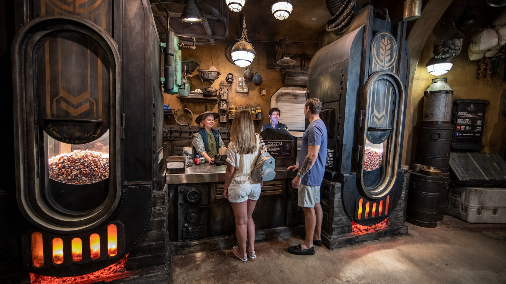
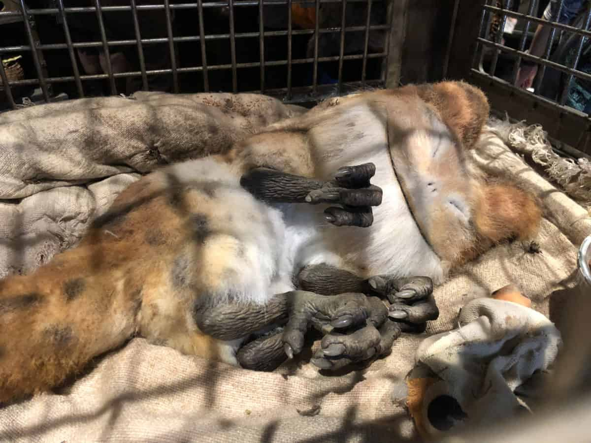
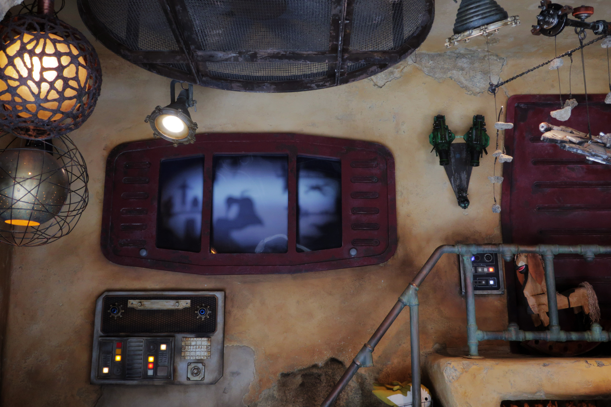
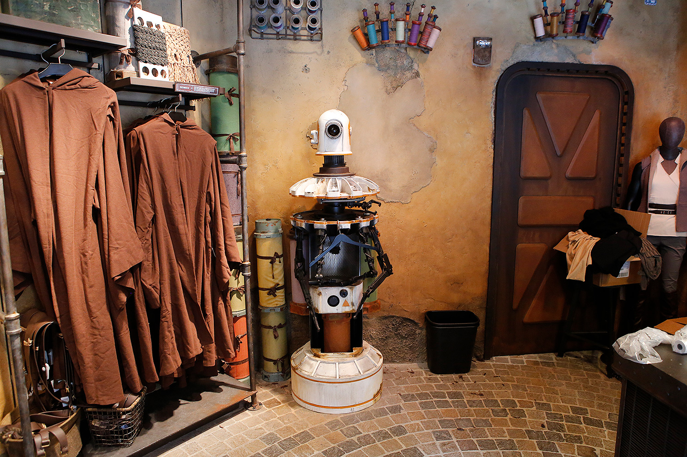

THE MARKETPLACE
The largest and most vibrant market on all of Batuu can be found right here at Black Spire Outpost. An explosion of color, sounds, and smells welcome you to one of the busiest hubs of daily life here in the Outpost.
-

KAT SAKA'S KETTLE
Kat Saka’s specialty is the Outpost Mix, a sweet and salty popped grain. For generations, the Saka family has been cultivating the land here on Batuu.
-

CREATURE STALL
Bina, an Amani from the planet Utapau, opened this stall as a sort of home base for her exotic creature collecting. If you’re looking to purchase a creature, a variety of species are available here.
-

TOYDARIAN TOYMAKER
Here, Zabaka, owner and head toymaker, sells hand-sewn soft toys, personally welded metal games, and hand-carved puppets. You may even see her working upstairs behind the window!
-

BLACK SPIRE OUTFITTERS
Your best bet for a new outfit is here, where Arta Kleidun offers traditionally styled robes and tabards, and matching belts and pouches.
-

JEWELS OF BITH
Looking for a souvenir from your visit to Batuu? In this tiny market stall, you’ll find the “trinket to treasure” from Black Spire from the proprietor, Kamka Lira. She’s a seasoned traveler, bringing back items from far-off planets and some of the galaxy’s top designers.